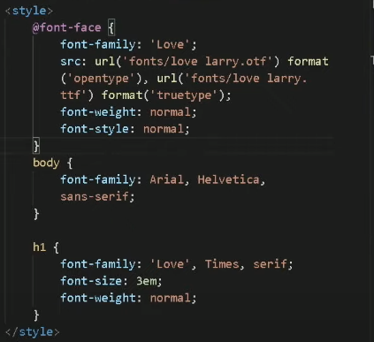

Anotações sobre CSS
Como fazer efeito gradiente
Tipografia
O termo Tipografia surgiu lá no começo do securlo 15.
"Monge copista", a função dele era copias o livros(A mão).
O pai da emprensa foi Johannes Gutenberg, mas ele não foi o primeiro a fazer isso, os primeiros foram o Chineses.
tipografia veio de duas palavras gregas, tipo "týpos"(imprensão, colocar coisas nos papeis) e Grafia"Graphia"(quer dizer escrita)
TIPOGRAFIA brasicamente é um estudo de como vou escrever coisas no papel ou telas.
TIPOGRAFIA 2
(CURIOSIDADE) Quando alguem cria uma fonte nova, primeiro eles desenha a letra X minusico dessa fonte, porque exite uma metrica chamada "Altura X", ela define a altura base das letras minuscula das letras dessa fonte

Itens Metricos, itens que precisa medir como esta na imagem abaixo

Altura das muinusicas se chama "altura X"
Depois podemos ver a "altura das maiúsculas"
Logo em seguida tem a Altura do vazemnto que ela se chama "Ascendente"
E tambem tem a altura que vazou para baixo que tem o apelido de "calda" que se chama de "Descendente"
E altura total somando todas as alturas se chama de "Corpo"
Anatomicos Geometricos
Nem todos as fontes tem esse componente
Ele cria uma linha imaginaria que facilita na leitura.

Componente anatomicos geometricos.
Componentes de letras de fontes de glifos e de caldas.

Familia tipograficas.
Primeira: fonte serifada, que tem aqueles pezinhos ao qual é facil de ler
Sans-serif, significa sem serifa, de preferencia é boa usar em site e texto muito longos
Fonte "Monoespaçada" uma fonte que tem as letras mesma largura, o memso espaço!
quarta simula fonte escrita a mão
quinta fonte são as fontes temáticas.
Tà ai, que coisa maluca
Shorthand
shorthand são resumo de coisas da fonte, tem q fazer na ordem um atras do outro pra dar certo
Fontes externas
pode vir a ajudar em algum momento

ele te ajuda dizendo como devo adicionar na parte de css
Capítulo 14 Aula 06.
Site externos de Fontes
Site bom de Fontes, é bom lembrar que quando for pegar alguma forte voce tem que ficar de olho se tem acentuação porque pode vir sem (~ ç) e tambem se tem fonte minuscula e maiuscula
Depois de colocar as fontes na pasta de css ela ainda não vai funcionar
Mesmo voce tentando chamar ela, ela ainda não não vai funcionar.
pra poder chamar as fonte personalizada deve fazer o que está a acima
E no final é pra ficar asssim.
Ficara mais organizado se eu criar uma pasta "FONTES" e chamar ela desta forma, e jogar todos os tipos de fonta lá.
Capítulo 14 Aula 07.